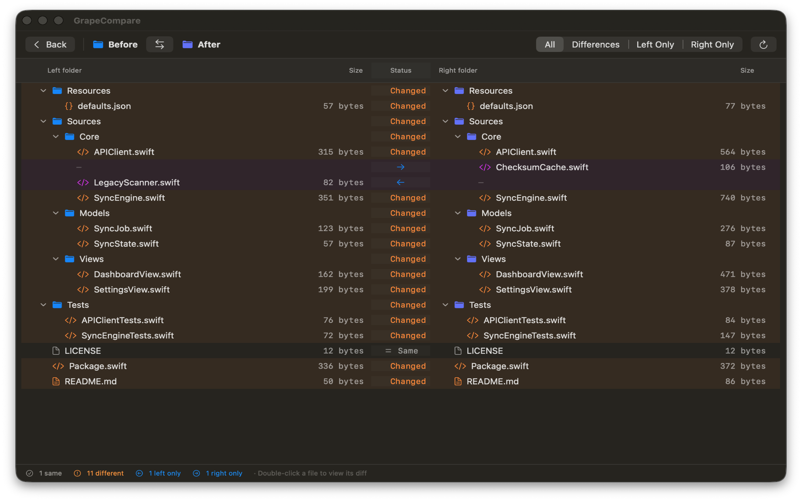
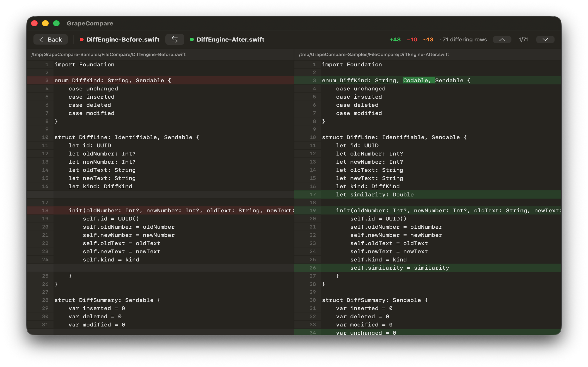

Two-pane folder diff
Recursively compare project trees with synchronized expansion, sizes, filters, and clear left-only or right-only markers.
Compare source files and entire project folders side by side with focused highlighting, aligned trees, and no data leaving your Mac.

Recursively compare project trees with synchronized expansion, sizes, filters, and clear left-only or right-only markers.
Line and character-level highlighting plus persistent comment, timestamp, UUID, address, and custom regex filters keep relevant edits easy to scan.
Inspect branches, commits, the index, working tree, worktrees, merge bases, history, live notifications, review state, and contextual file actions without changing repository state.
Resolve conflicts individually or in batches with keyboard navigation, undo and redo, editable output, and Git mergetool integration.
Use Two-Up, Split, Blink, Difference, synchronized zoom and pan, metadata inspection, lockable RGBA/HSB/Lab sampling, configurable absolute or proportional rendering, thresholds, channel isolation, and local alignment.
Preview Mirror, Update, or Custom plans, inspect dry-run reports, then execute transactional, verifiable, and recoverable file operations.
Compare XCStrings and Xcode projects, then inspect bundles, signatures, entitlements, profiles, Mach-O architectures, and asset catalogs.
Use the same deterministic comparison core from the native app, Finder Quick Action, JSON-capable CLI, difftool, and mergetool.
Everything runs locally. There is no account, subscription, analytics, tracking, advertising, or cloud upload.

GrapeCompare processes selected files locally. It has no analytics, advertising, tracking, account system, or cloud upload.